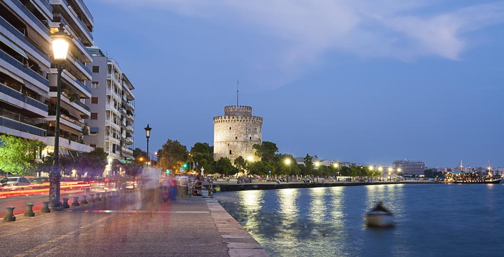

 Η Θεσσαλονίκη είναι η δεύτερη σε πληθυσμό και έκταση πόλη της Ελλάδας. Συχνά αναφέρεται η συμπρωτεύουσα της Ελλάδας. Αποτελεί έδρα του ομώνυμου δήμου, της Περιφερειακής Ενότητας Θεσσαλονίκης, της Περιφέρειας Κεντρικής Μακεδονίας και της Αποκεντρωμένης Διοίκησης Μακεδονίας Θράκης. Από την ίδρυσή της από τον Κάσσανδρο η Θεσσαλονίκη ως μια ακμάζουσα ελληνιστική πόλη μέχρι την οθωμανική κυριαρχία αξιοποιεί την στρατηγική της θέση και αναπτύσσεται σε μια πολυπολιτισμική πόλη. Από το 1912, με τη λήξη των Βαλκανικών πολέμων και την ενσωμάτωση της περιοχής στο σύγχρονο Ελληνικό Κράτος, η Θεσσαλονίκη αποτελεί τη δεύτερη σε πληθυσμό πόλη της Ελλάδας. Ο πληθυσμός του πολεοδομικού συγκροτήματος υπολογίζεται σήμερα στους 790.824 κατοίκους (2011).
Η ίδρυση της πόλης στην ελληνιστική εποχή συμπίπτει με μια κρίσιμη φάση στην ιστορία του Μακεδονικού Βασιλείου, που ξεκινά από τον πρόωρο θάνατο του Μεγάλου Αλεξάνδρου και με την διεκδίκηση του θρόνου του Μακεδόνα βασιλιά από τους επιγόνους του.